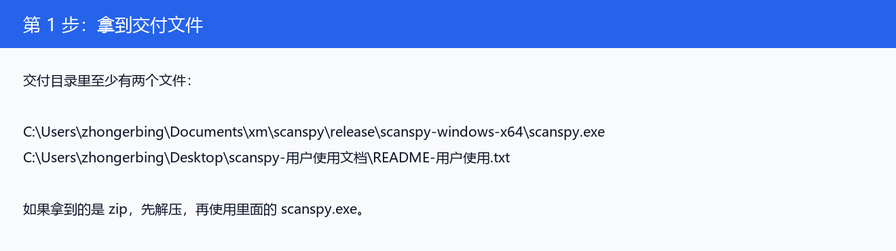
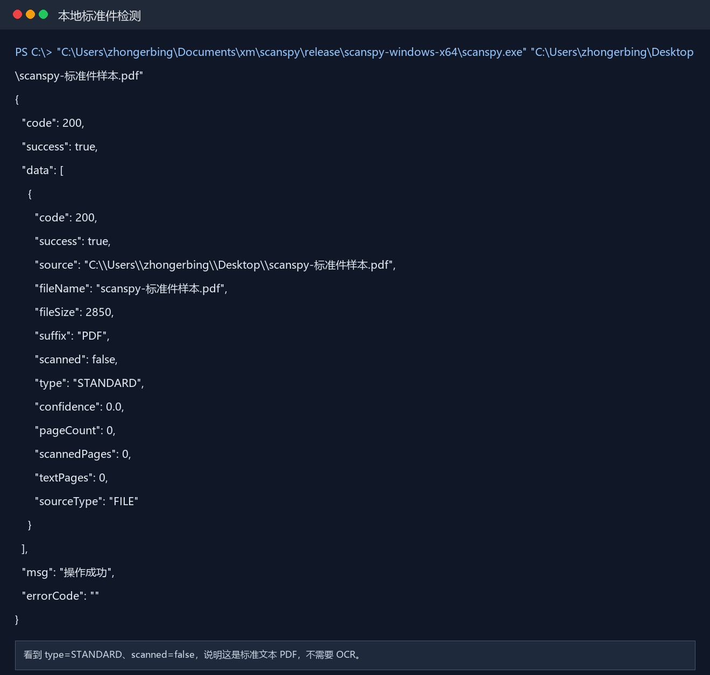
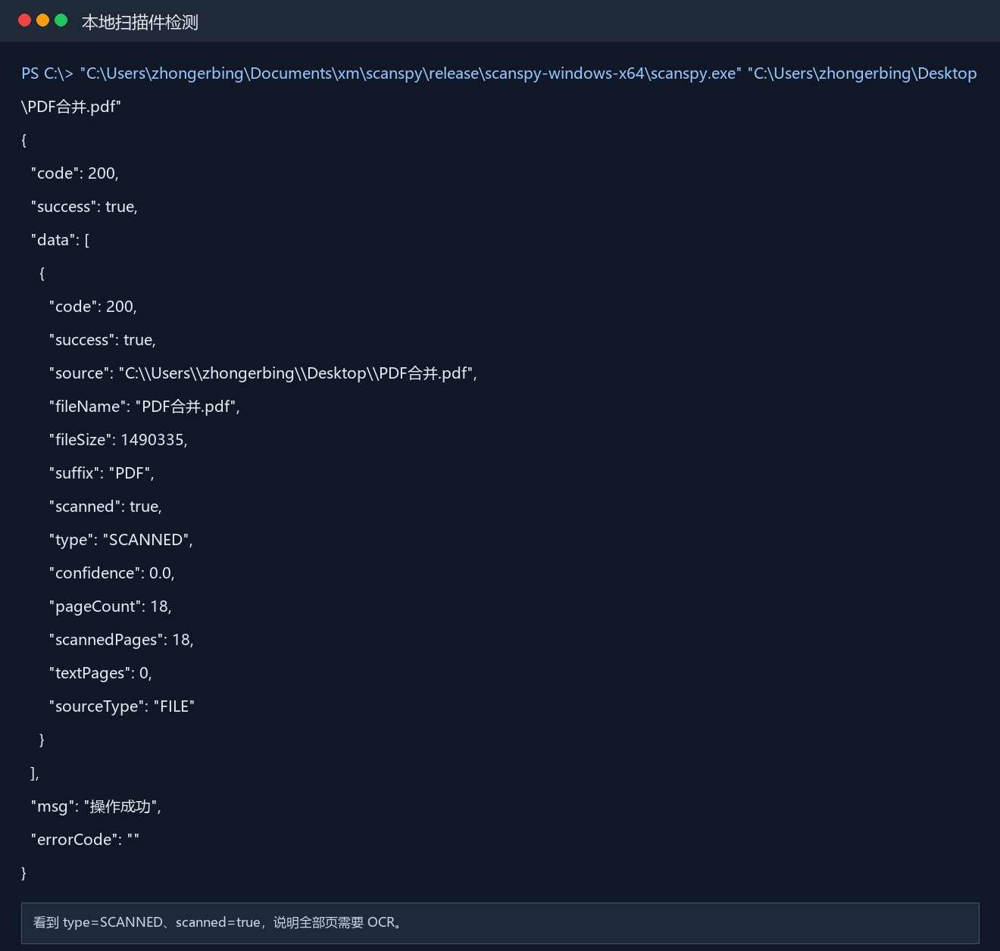
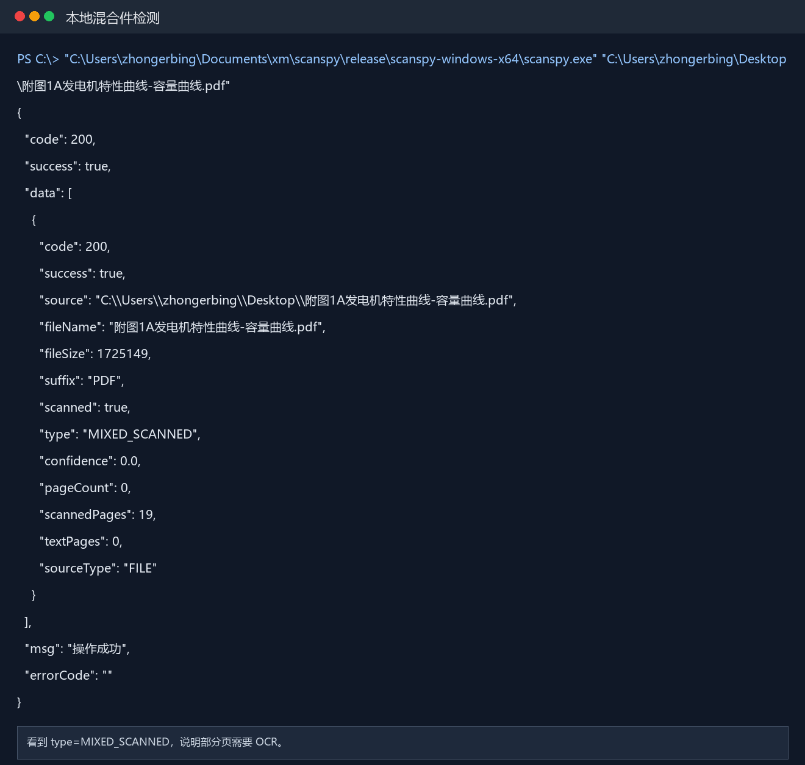
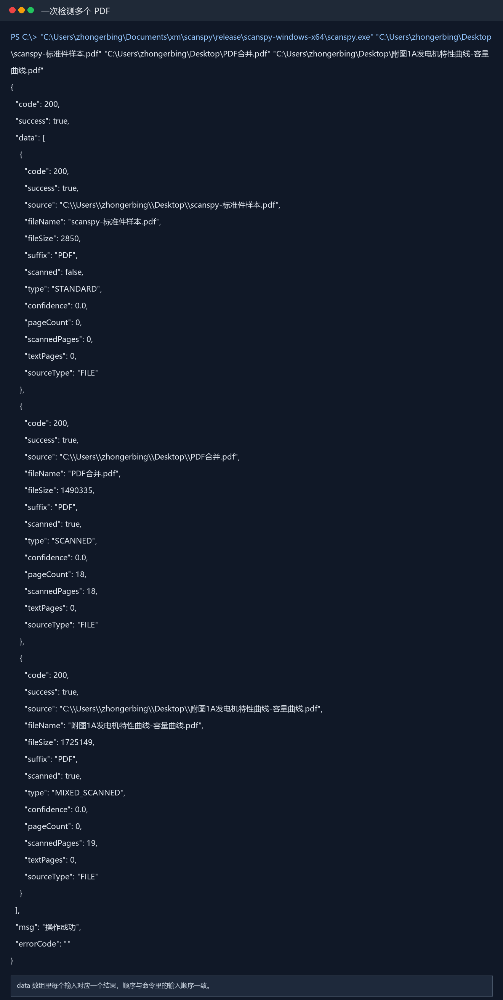
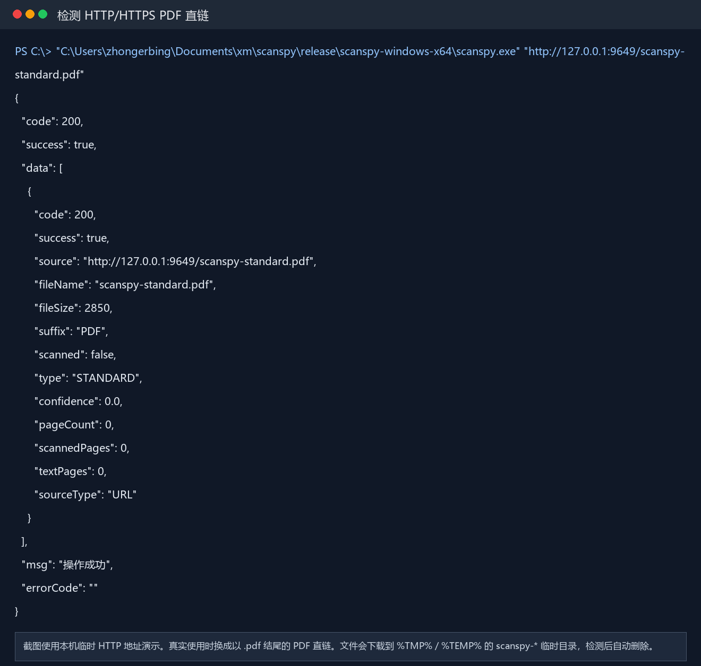
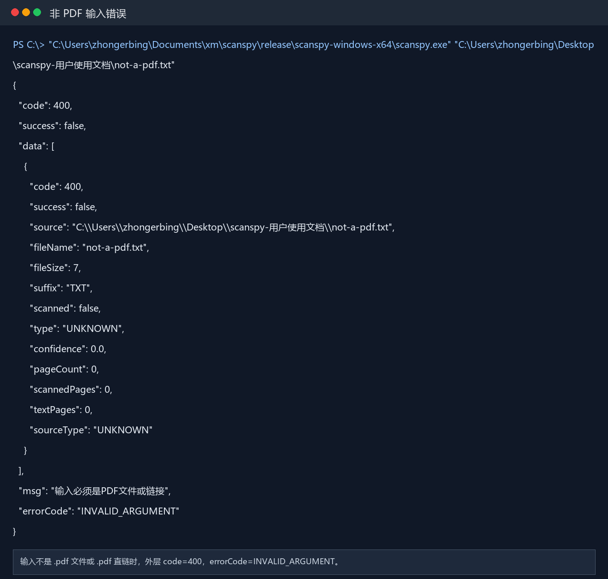
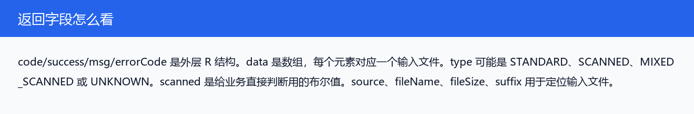

1拿到交付文件
如果老板或实施人员给用户的是 zip，先解压。真正运行的是 scanspy.exe。

本文档用于交付给 Windows 用户，说明如何运行 scanspy.exe，如何读取 JSON 返回值，以及每个枚举字段代表什么。本文档不会修改 release 目录里的 README。
scanspy.exe 用于判断 PDF 是否需要 OCR。业务上主要读取 scanned 和 type：标准 PDF 返回 STANDARD，扫描 PDF 返回 SCANNED，部分页面需要 OCR 的 PDF 返回 MIXED_SCANNED。
.pdf 结尾的 HTTP/HTTPS 直链。
code/success/data/msg/errorCode。
scanspy.exe。
推荐在 PowerShell 中使用完整路径调用 exe，PDF 路径外层加英文双引号，避免中文、空格或括号导致命令解析错误。
C:\tools\scanspy\scanspy.exe "C:\Users\xxx\Desktop\a.pdf" C:\tools\scanspy\scanspy.exe "C:\Users\xxx\Desktop\a.pdf" "C:\Users\xxx\Desktop\b.pdf" C:\tools\scanspy\scanspy.exe "https://example.com/a.pdf"
成功和失败时 data 内每个结果对象保持同一套字段，方便 Java 使用统一 DTO 反序列化。
| 字段 | 位置 | 说明 |
|---|---|---|
code | 外层 / data item | HTTP 风格状态码。全部成功通常是 200；参数或 PDF 处理失败通常是 400。 |
success | 外层 / data item | 是否成功。多个 PDF 中有任意一个失败时，外层会体现失败或部分失败。 |
data | 外层 | 数组，每个输入对应一个结果对象。 |
source | data item | 原始输入，本地路径或 URL。 |
fileName | data item | 文件名，例如 a.pdf。 |
fileSize | data item | 文件大小，单位 byte。 |
suffix | data item | 文件后缀，当前要求为 PDF。 |
scanned | data item | 业务布尔值。SCANNED 和 MIXED_SCANNED 都返回 true；STANDARD 返回 false。 |
type | data item | 文档类型枚举，见下面的 DocumentType。 |
confidence | data item | 置信度字段。当前严格跟随 ocr-detection 公开 API，该库不提供置信度，所以统一为 0.0。 |
pageCount | data item | 页数。当前库在 SCANNED 场景能返回页码列表；STANDARD 和 MIXED_SCANNED 不一定能给出完整页数。 |
scannedPages | data item | 判定为需要 OCR 的页数或库返回的相关页码数量。 |
textPages | data item | 当前严格公开 API 模式下不做额外手写页级检测，所以一般为 0。 |
sourceType | data item | 输入来源枚举，见 SourceType。 |
msg | 外层 | 中文提示信息。 |
errorCode | 外层 | 错误码。成功时为空字符串。 |
下面把项目里的枚举逐个列出来，Java 侧可以按同名枚举建模。当前检测逻辑严格使用 ocr-detection.detect_ocr() 公开 API，不再叠加自定义 PDF 判断规则。
| 库枚举值 | 原始值 | 项目映射结果 | 说明 |
|---|---|---|---|
OCRStatus.FALSE | false | STANDARD | 不需要 OCR，项目按标准件处理，scanned=false。 |
OCRStatus.TRUE | true | SCANNED | 需要 OCR，项目按扫描件处理，scanned=true。 |
OCRStatus.PARTIAL | partial | MIXED_SCANNED | 部分页面需要 OCR，项目按混合扫描件处理，scanned=true。 |
| 枚举值 | 中文含义 | 业务解释 | scanned |
|---|---|---|---|
STANDARD | 标准件 / 文本型 PDF | ocr-detection 返回 false，通常表示不需要 OCR，可按普通 PDF 处理。 | false |
SCANNED | 扫描件 / 纯图像 PDF | ocr-detection 返回 true，表示页面需要 OCR。项目会把它作为扫描件处理。 | true |
MIXED_SCANNED | 混合扫描件 | ocr-detection 返回 partial，表示只有部分页面需要 OCR，通常是文本页和扫描页混在一起。 | true |
EMPTY | 空白 PDF | 保留兼容字段。严格公开 API 模式不会主动返回该类型，因为 ocr-detection 不公开空白 PDF 的独立分类。 | 按库结果 |
UNKNOWN | 未知类型 | 通常用于解析失败、参数错误、下载失败等异常结果。 | false |
| 枚举值 | 中文含义 | 当前项目中的状态 |
|---|---|---|
TEXT_PAGE | 文本页 | 保留给 Java 侧或未来扩展。当前严格公开 API 模式不返回单页明细。 |
SCANNED_PAGE | 扫描页 | 保留给 Java 侧或未来扩展。当前只汇总 scannedPages 数量。 |
UNKNOWN_PAGE | 未知页面 | 保留兼容，当前结果体不输出逐页页面类型。 |
| 枚举值 | 中文含义 | 说明 |
|---|---|---|
FILE | 本地文件 | 输入是 Windows 本地 PDF 路径。 |
URL | PDF 直链 | 输入是 http:// 或 https:// 开头，并且路径后缀为 .pdf 的 URL。 |
UNKNOWN | 未知来源 | 参数错误或无法识别输入类型时使用。 |
| 错误码 | 中文含义 | 常见原因 |
|---|---|---|
INVALID_ARGUMENT | 参数错误 | 没有传入参数，或者传入内容既不是 PDF 文件路径，也不是 PDF 直链 URL。 |
PARTIAL_FAILURE | 部分失败 | 一次传入多个 PDF，其中至少一个处理失败。 |
PDF_NOT_FOUND | 文件不存在 | 本地路径不存在。 |
PDF_NOT_FILE | 不是文件 | 传入的是目录，或者不是普通文件。 |
PDF_DOWNLOAD_ERROR | 下载失败 | URL 网络不可达、超时、状态码异常或下载过程中断。 |
PDF_URL_NOT_PDF | URL 不是 PDF | URL 后缀不是 .pdf，或者响应内容不是 PDF 文件头。 |
PDF_PARSE_ERROR | PDF 解析失败 | PDF 文件损坏、加密不可读，或者底层库无法解析。 |
PDF_EMPTY | PDF 没有页面 | 保留错误码，表示 PDF 没有可检测页面。 |
下面是用户实际操作时可以照着执行的步骤。截图来自本机直接运行 scanspy.exe 的结果。
如果老板或实施人员给用户的是 zip，先解压。真正运行的是 scanspy.exe。

推荐使用 PowerShell。用户不需要安装 Python、uv 或项目依赖。
标准件返回 STANDARD，scanned=false。

扫描件返回 SCANNED，scanned=true。

混合件返回 MIXED_SCANNED，scanned=true。

命令后面连续追加多个 PDF 路径即可，每个 PDF 在 data 数组中各有一个返回结果。

URL 必须是 HTTP/HTTPS，并且路径以 .pdf 结尾。

错误时仍然保持相同 JSON 结构，便于 Java 反序列化。

业务通常重点看 scanned、type、source、fileName、errorCode。
